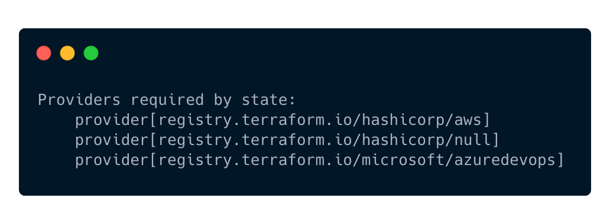

Fixing Terraform provider paths in state might be required after upgrading to 0.13-0.14 if your prior state has the following paths.
First, get the terraform providers from state using: terraform providers
The output should look similar to this:

To fix these, try running the commands to fix state.
Please adjust to the required providers your state uses, and make sure your tooling has a backup of the state file in case something goes wrong.
Terraform Cloud should have this backed up automatically if it's your backend.
terraform state replace-provider -- registry.terraform.io/-/aws registry.terraform.io/hashicorp/aws
terraform state replace-provider -- registry.terraform.io/-/random registry.terraform.io/hashicorp/random
terraform state replace-provider -- registry.terraform.io/-/null registry.terraform.io/hashicorp/null
terraform state replace-provider -- registry.terraform.io/-/azuredevops registry.terraform.io/microsoft/azuredevops
The resulting changes can be seen when running terraform providers and seeing the dash is now gone.

Upgrading to Terraform v0.13 - Terraform by HashiCorp
{{< admonition type="Example" title="Loop" open="false">}}
If you have multiple workspaces in the same folder, you'll have to run fix on their seperate state files.
This is an example of a quick adhoc loop with PowerShell to make this a bit quicker, using tfswitch cli tool.
tf workspace list | ForEach-Object {
$workspace = $_.Replace('*','').Trim()
Write-Build Green "Selecting workspace: $workspace"
tf workspace select $workspace
tfswitch 0.13.5
tf 013.upgrade
tfswitch
tf init
# Only use autoapprove once you are confident of these changes
terraform state replace-provider -auto-approve -- registry.terraform.io/-/aws registry.terraform.io/hashicorp/aws
terraform state replace-provider -auto-approve -- registry.terraform.io/-/random registry.terraform.io/hashicorp/random
terraform state replace-provider -auto-approve -- registry.terraform.io/-/null registry.terraform.io/hashicorp/null
terraform state replace-provider -auto-approve -- registry.terraform.io/-/azuredevops registry.terraform.io/microsoft/azuredevops
tf validate
}
{{< /admonition >}}